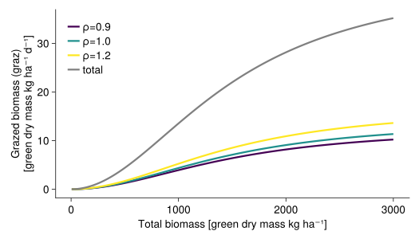

Growth
the net growth of the plants is modelled by...
- the potential growth that is multiplied by some growth reducer functions, both processes are implemented in the main function
growth - Leaf senescence
- Agricultural defoliation
RegionalGrasslandSim.Growth.growth — Functiongrowth(; nspecies, fun_response, SLA, biomass, PAR, WR, T, ST)TBW
Potential growth
RegionalGrasslandSim.Growth.potential_growth — Functionpotential_growth(; SLA, nspecies, biomass, PAR)Calculates the potential growth of all plant species in a specific patch.
This function is called each time step (day) for each patch. The NamedTuple p contains all the species specific trait values. The vector biomass contains the biomass of the species in the specific patch. The PAR value is the photosynthetically active radiation of the day.
First, the leaf area indices of all species are calculated (see calculate_LAI). Then, the total leaf area is computed. An inverse exponential function is used to calculate the total primary production:
\[\text{totalgrowth} = 10 \cdot PAR \cdot RUE_{max} \cdot (1 - \text{exp}(-\alpha \cdot \text{LAItot}))\]
This primary production is then multiplied with the share of the leaf area index of the individual species

RegionalGrasslandSim.Growth.calculate_LAI — Functioncalculate_LAI(; SLA, biomass)Calculate the leaf area index of all species of one habitat patch.
RegionalGrasslandSim.Growth.community_weighted_mean_height — Functioncommunity_weighted_mean_height(; biomass, CH)TBW
Reducer functions
The growth of each plant species in each patch is dependent on...
- ☀ the photosynthetically active radiation
radiation_reduction - 🌡 the air temperature
temperature_reduction - 💧 the soil water content
- the plant-available nutrients
- 📈 a seasonal effect, that is modelled by the accumulated degree days
seasonal_reduction
RegionalGrasslandSim.Growth.radiation_reduction — Functionradiation_reduction(; PAR)Reduction of radiation use efficiency at light intensities higher than 5 $MJ\cdot m^{-2}\cdot d^{-1}$
\[\text{Rred} = \text{min}(1, 1-\gamma_1(\text{PAR}(t) - \gamma_2))\]
comment to the equation/figure: PAR values are usually between 0 and 15 $MJ\cdot m^{-2}\cdot d^{-1}$ and therefore negative values of Rred are very unlikely 
RegionalGrasslandSim.Growth.temperature_reduction — Functiontemperature_reduction(; T)TBW

RegionalGrasslandSim.Growth.water_reduction — Functionwater_reduction(;
fun_response,
WR,
water_red,
max_SLA_water_reduction,
max_SRSA_water_reduction,
PET,
PWP,
WHC)See for details: Water stress
RegionalGrasslandSim.Growth.nutrient_reduction — Functionnutrient_reduction(;
fun_response,
nutrient_red,
nutrients,
max_AMC_nut_reduction,
max_SRSA_nut_reduction)See for details: Nutrient stress
RegionalGrasslandSim.Growth.seasonal_reduction — Functionseasonal_reduction()TBW

Leaf senescence
RegionalGrasslandSim.Growth.senescence — Functionsenescence(; ST, biomass, μ)\[\begin{align} LL &= 10 ^ { \left(log10(SLA) - 2.41\right) / -0.38} \cdot\frac{365.25}{12} \\ μ &= \frac{\text{sen_intercept}}{1000} + \frac{\text{sen_rate}}{1000} \cdot \frac{1}{LL} \\ \text{senescence} &= μ \cdot \text{SEN} \cdot \text{biomass} \end{align}\]
- LL leaf life span [$d$]
- SLA specific leaf area [$\frac{cm^2}{g}$] $\rightarrow$ this includes a unit conversion of the SLA values (in the model the unit of SLA is $\frac{m^2}{g}$)
- μ leaf senescence rate [$\frac{1}{d}$]
- SEN seasonal component of the senescence (between 1 and 3)
- sen_intercept α value of a linear equation that models the influence of the leaf senescence rate μ on the total senescence rate
- sen_rate β value of a linear equation that models the influence of the leaf senescence rate μ on the total senescence rate
The parameters $\text{sen_intercept}$ and $\text{sen_rate}$ were divided by 1000 to avoid very low numbers.
RegionalGrasslandSim.Growth.seasonal_component_senescence — Functionseasonal_component_senescence(; ST)Seasonal factor for the senescence rate.
\[\begin{align*} SEN &= \begin{cases} SEN_{min} & \text{if} \;\; ST < Ψ_1 \\ SEN_{min}+(SEN_{max} - SEN_{min}) \frac{ST - Ψ_1}{Ψ_2 - Ψ_1} & \text{if}\;\; Ψ_1 < ST < Ψ_2 \\ SEN_{max} & \text{if}\;\; ST > Ψ_2 \end{cases} \\ \\ \end{align*}\]
- ST yearly accumulated degree days [$°C$]
- $Ψ₁=775$ [$°C\cdot d$]
- $Ψ₂=3000$ [$°C\cdot d$]
- $SEN_{min}=1$
- $SEN_{max}=3$

Agricultural defoliation
Biomass is removed by...
RegionalGrasslandSim.Growth.grazing — Functiongrazing(; LD, biomass, ρ, nspecies, grazing_half_factor)\[\begin{align} μₘₐₓ &= κ \cdot \text{LD} \\ h &= \frac{1}{μₘₐₓ} \\ a &= \frac{1}{\text{grazing_half_factor}^2 \cdot h} \\ \text{totgraz} &= \frac{a \cdot (\sum \text{biomass})^2}{1 + a\cdot h\cdot (\sum \text{biomass})^2} \\ \text{graz} &= \text{totgraz} \cdot \frac{ρ \cdot \text{biomass}}{\sum ρ \cdot \text{biomass}} \end{align}\]
LDdaily livestock density (livestock units ha⁻¹)κdaily consumption of one livestock unit, follows [1]ρappetence of the plant species for livestock, dependent on nitrogen per leaf mass (LNCM)grazing_half_factoris the half-saturation constant- equation partly based on [2]
Influence of grazing (livestock density = 2), all plant species have an equal amount of biomass (total biomass / 3): 
Influence of grazing_half_factor (LD is set to 2): 
RegionalGrasslandSim.Growth.mowing — Functionmowing(;
mowing_height,
days_since_last_mowing,
CH,
biomass,
mowing_mid_days)\[\begin{align} \lambda &= \frac{\text{mown_height}}{CH}\\ \text{mow_factor} &= \frac{1}{1+exp(-0.1*(\text{days_since_last_mowing}-\text{mowing_mid_days})}\\ \text{mow} &= \lambda \cdot \text{biomass} \end{align}\]
The mow_factor has been included to account for the fact that less biomass is mown when the last mowing event was not long ago. Influence of mowing for plant species with different heights ($CH$): 
Visualisation of the mow_factor: 
RegionalGrasslandSim.Growth.trampling — Functiontrampling(; LD, biomass, LA, CH, trampling_factor)\[\begin{align} ω &= \frac{\text{trampling_factor}}{CH^{0.25}} \\ \text{trampled_biomass} &= \begin{cases} \text{biomass}, & \text{if LD > ω}\\ \frac{\text{biomass}}{2} \cdot \left(1- cos\left(\frac{π\cdot\text{LD}}{ω}\right)\right), & \text{otherwise} \end{cases} \end{align}\]
It is assumed that tall plants (trait: $CH$) are stronger affected by trampling. A cosine function is used to model the influence of trampling.
If the livestock density is higher than $ω$, all the biomass of that plant species will be removed. This is unlikely to be the case.
- biomass [$\frac{kg}{ha}$]
- LD daily livestock density [$\frac{\text{livestock units}}{ha}$]
- trampling_factor [$ha$]
- CH canopy height [$m$]